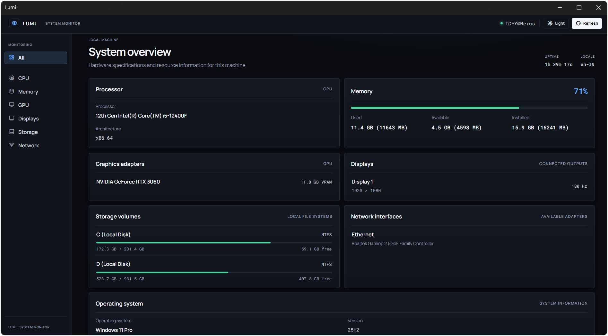

Lumi.
A lightweight C library that retrieves system information on Windows. Supports Windows 10 and 11, with full C++ compatibility.

How it works
- Lightweight by design: a small C library you drop into a project, with no third-party dependencies to pull in.
- One
LUMIstruct holds the whole system picture, filled by calls, so there's no per-query plumbing. - Native Windows methods only ! DXGI, registry reads and plain WinAPI calls gather the data, with nothing wrapped around them.
- Powers a C++ and webview app, shown above, which gets all of its system data from Lumi.
- C
- CMake
- WinAPI
- DXGI
- Windows Registry